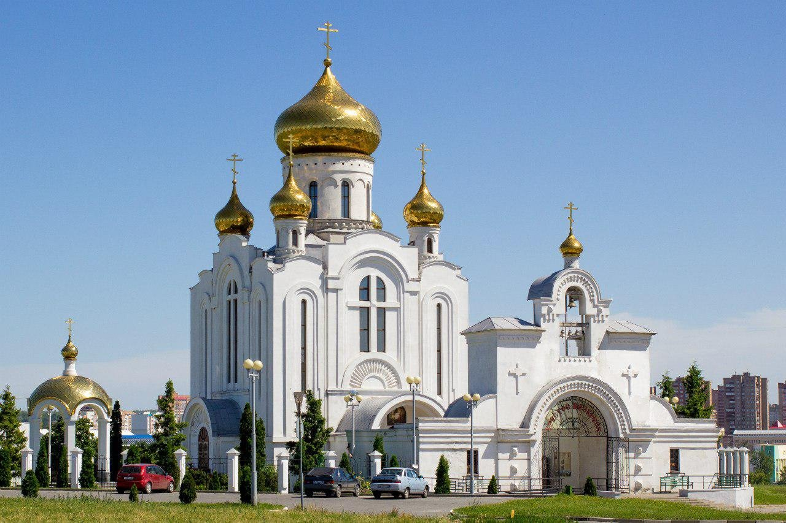
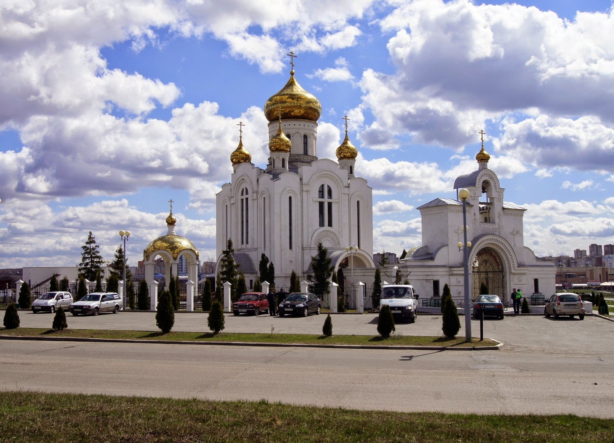
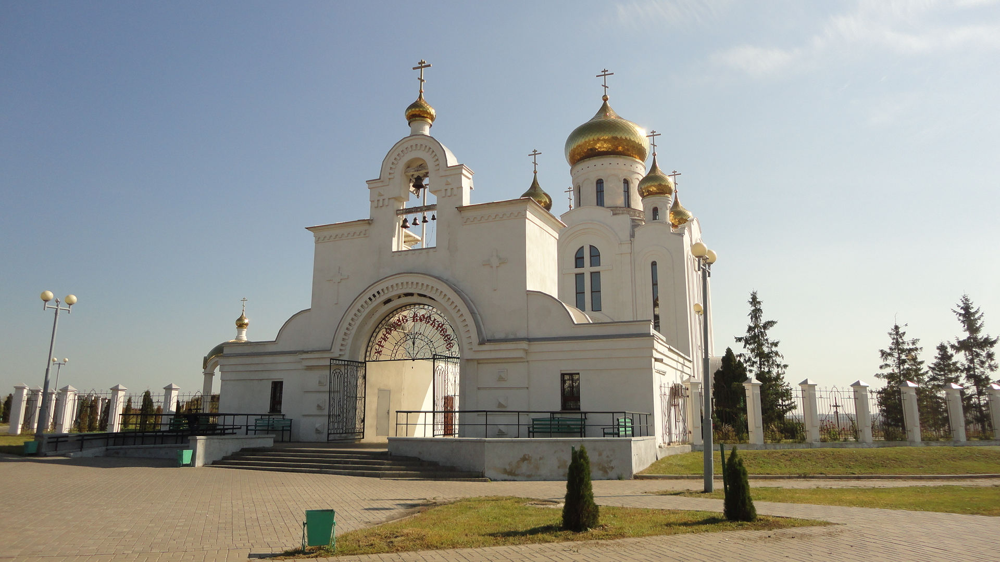

Храм Рождества Христова
- Режим работы: С 7:00 до 19:00
- Цена за вход: бесплатно
- Местоположение: ул. Рождественский микрорайон, 1, Старый Оскол
Закладной камень был освящён 18 сентября 1999 года.
После этого был установлен временный храм — вагончик,
в котором проводились Богослужения.
7 января 2001 года в праздник Рождества Христова была
отслужена первая Божественная литургия. Одновременно
началось возведение каменного здания храма.

6 декабря 2002 года засияли 6 золотых куполов.
Главный 8-метровый купол весит почти 6 тонн.
Гигантский купол разделили на заводе
на 10 сегментов-лепестков и доставили в Старый
Оскол на машине. Вместе с ним привезли четыре
6-метровых купола, один маленький — полутораметровый
(на предхрамовую звонницу) и шесть золотых крестов.
Золотистое покрытие — это нитрид титана.

8 января 2003 года на звонницу подняты и освящены
колокола.
Весной 2003 года, в праздник светлой Пасхи первую
службу отстояли прихожане новой церкви, а 10 сентября 2003 года
архиепископ Белгородский и Старооскольский Иоанн освятил
построенный храм.
Высота храма вместе с крестом составляет 37 метров, площадь
424 квадратных метра.

Иконостас храма украшает икона Рождества Христова.
Сам иконостас — деревянный, одноярусный, выполнен
белгородскими мастерами. Иконы тоже были написаны
в Белгороде, в древнерусском каноническом стиле.
Официальный сайт храма.